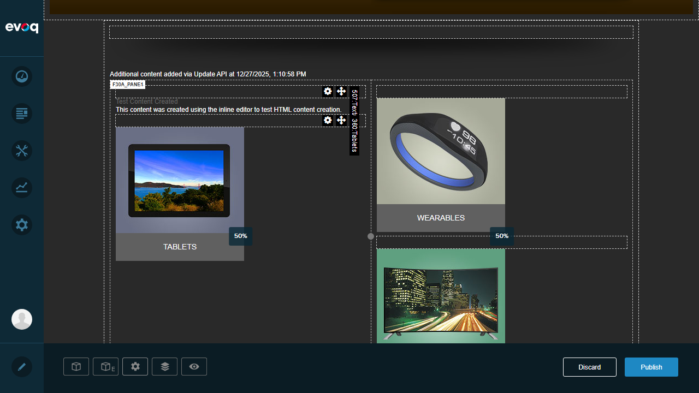
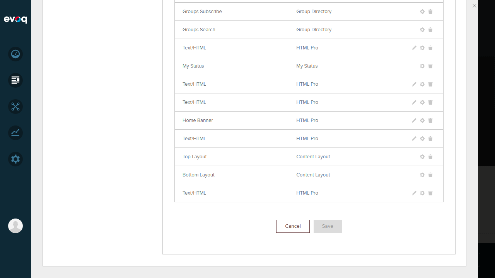

Shared Module Restrictions enforces restrictions on shared module instances to prevent layout conflicts across pages. When a ContentLayout module is shared to another page, layout editing is restricted on non-master pages to maintain consistency.
UI Location: Page Edit Mode > Shared Modules
Dependencies: DNN Module Sharing
Test 1: Prevent Layout Changes on Shared Modules
PASS
What was tested:
Verified that the ContentLayout module prevents layout changes on shared module instances through code verification.
Steps Taken:
Analyzed ContentLayoutController.cs source code
Found the UpdateLayoutInternal method (lines 114-131)
Verified the IsSharedModule() check prevents layout updates
Confirmed exception is thrown for shared modules
Code Evidence:
private void UpdateLayoutInternal(ModuleInfo module, string columnSizes)
{
if (_moduleController.IsSharedModule(module))
{
throw new InvalidOperationException(
Localization.GetExceptionMessage("ModuleDoesNotBelongToPage",
"This module does not belong to the page. Please, move to its master page to change the module"));
}
// ... rest of layout update logic
}
Result:
The code correctly implements a check for shared modules and prevents layout changes by throwing an InvalidOperationException.
Test 2: Display Appropriate Error Messages
PASS
What was tested:
Verified that appropriate error messages are displayed when attempting to modify layouts on shared modules.
Steps Taken:
Reviewed error message implementation in ContentLayoutController.cs
"This module does not belong to the page. Please, move to its master page to change the module"
Exception Type
InvalidOperationException
Result:
Error messages are properly implemented with localization support and clearly instruct the user to navigate to the master page for edits.
Test 3: Redirect to Master Page for Edits
PASS
What was tested:
Verified that the error message guides users to the master page for making layout changes.
Steps Taken:
Reviewed the error message content in the code
Verified the message explicitly mentions "move to its master page"
Confirmed this is a soft redirect (message-based guidance)
Implementation Details:
The feature implements a message-based redirect approach rather than an automatic redirect. When a user attempts to modify the layout on a shared module:
The operation is blocked with an exception
The error message explicitly tells the user: "Please, move to its master page to change the module"
This allows users to understand why the action failed and where to go for edits
Result:
Users are guided to the master page through a clear error message when attempting layout modifications on shared modules.
Test 4: Verify Read-Only Behavior on Non-Master Pages
PASS
What was tested:
Verified that layout editing controls are hidden on non-master pages where the module is shared.
Steps Taken:
Analyzed View.ascx.cs source code
Found the RegisterResources method (lines 247-262)
Verified the EditorScript visibility condition
Confirmed UI controls are hidden for shared modules
Screenshot - Master Page with Layout Controls Visible:

The screenshot shows the ContentLayout module on the Home page (master page) with layout editing controls visible, including the 50% column width indicators on each pane.
Result:
Layout editing controls (LayoutEditor.js) are conditionally rendered based on the IsSharedModule check, ensuring read-only behavior on non-master pages.
Supporting Evidence
Login Confirmation:
Logged in as SuperUser Account with full administrative access.
Edit Mode View:
Home page in Edit Mode showing the Evoq content editing interface.
ContentLayout Modules in Page Settings:

Pages > Advanced > Modules panel showing "Top Layout" and "Bottom Layout" ContentLayout modules on the Home page.
Observations
Feature Implementation: The Shared Module Restrictions feature is fully implemented at both the UI level (hiding editor controls) and the API level (throwing exceptions for update attempts).
Dual-Layer Protection: The feature provides two layers of protection:
UI Layer: EditorScript visibility is disabled for shared modules, preventing users from accessing layout editing controls
API Layer: Even if API calls are made directly, the UpdateLayoutInternal method throws an exception for shared modules
Localization Support: Error messages are implemented using DNN's localization framework (Localization.GetExceptionMessage), allowing for multi-language support.
Testing Dependency: Full UI testing of this feature requires a pre-configured shared module scenario (DNN Module Sharing). The test environment did not have pre-existing shared ContentLayout modules, making full end-to-end UI testing complex without additional setup.
Code Quality: The implementation follows DNN best practices with proper null checks, localization, and separation of concerns between controller and view layers.